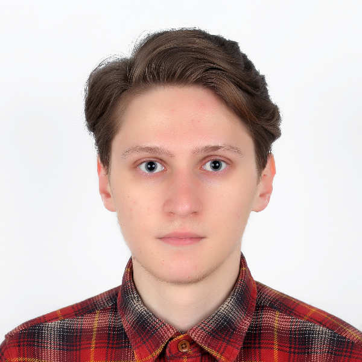

Resume

Redka Aleksei
Future Front-end Developer.
About me
Former web designer, with possible rehabilitation in the future, who began to study front-end development.
I plan to actively study and develop my skills in this area. I have a curse of no matter what I start to do,
everything turns out great, but it's compensated by laziness, a weak spot or something like that :(
Courses will help me not to relax and not to abandon :)
Skills
- A little bit of this
- A little bit of that
+
- Photoshop
- Illustrator
- Sketch App
- HTML (a little bit)
- God knows what else
Education
- Poltava University of Economics and Trade
Bchelor's Degree - International Economy 2014-2018
- Poltava University of Economics and Trade
Master's Degree - International Economic Relations 2018-2020
- Beetroot Academy
2020-till now
Work Experience
Web-designer
- ITLS.ua - april 2018 till june 2018
- Cosmo Digital Agency - june 2018 till september 2018
- Freelance - september 2018 till ??
Front-end Developer
- Error 404 not found :(
Languages
- Russian - native.
- Ukrainian - native as well.
- English - almost native.
- French - was almost native as well, need to remember.
Interests/hobbies
- Photography, when there is someone to photograph.
- I like to travel, when I have the opportunity.
- I read fiction, sometimes.
- TV series and movies.
- Board and comp. games.
- Constant attempts to learn something new.
Contacts and social media